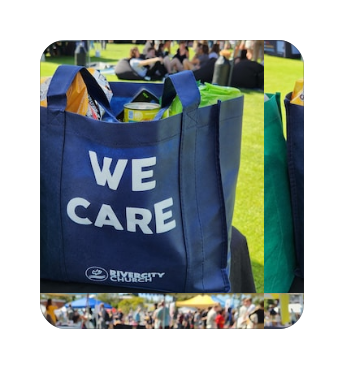
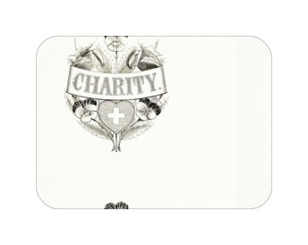
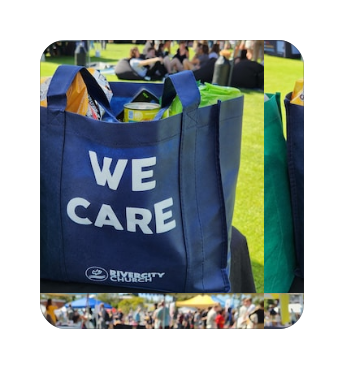
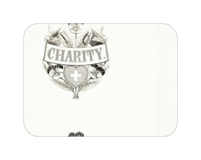
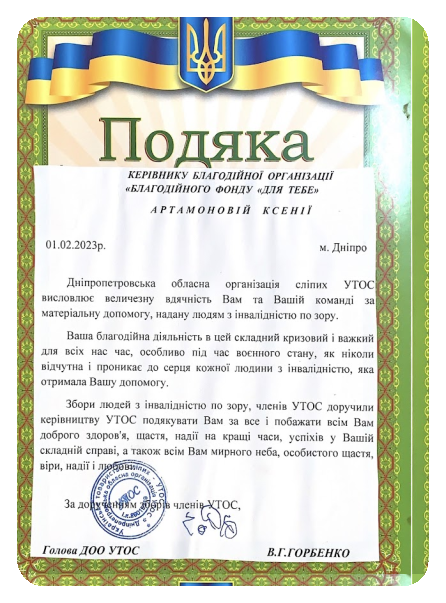
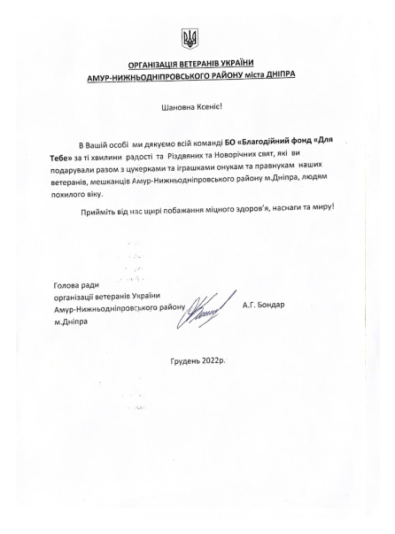
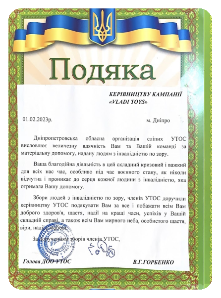
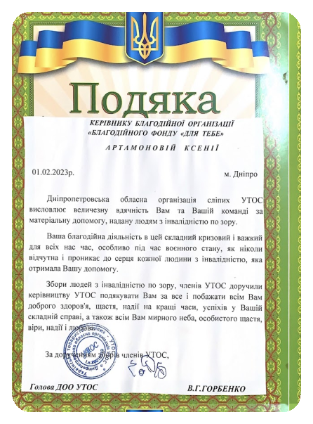
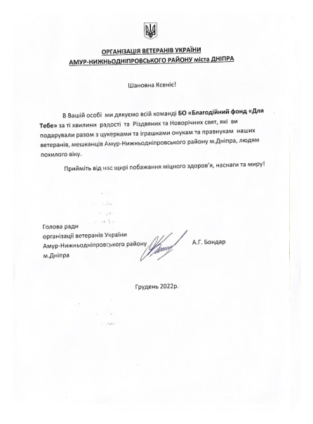
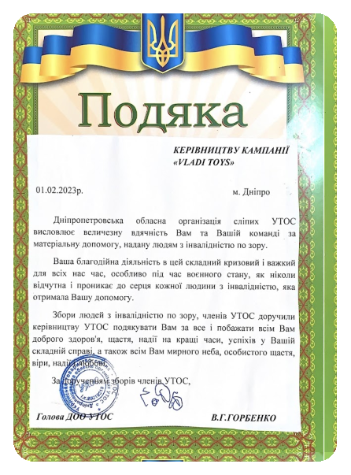

Наші Партнери


.svg)


.svg)
Про Фонд
-


Всеукраїнський благодійний фонд «Для тебе» був створений у 2018р. для надання допомоги дітям, хворим від народження, лікарням, установам, дітям позбавлених батьківського піклування та нужденним категоріям населення. Основним напрямком роботи фонду є лікування важко хворих новонароджених дітей. Головна мета нашої діяльності - здорова нація. Наша праця направлена на зменшення відсотоку дитячої смертності та розвитку патологічних захворювань, дитячої інвалідності на території України. Ми сприяємо праці реабілітаційних центрів і інтернатів для дітей із інвалідністю.
-
Всеукраїнський благодійний фонд «Для тебе» був створений у 2018р. для надання допомоги дітям, хворим від народження, лікарням, установам, дітям позбавлених батьківського піклування та нужденним категоріям населення. Основним напрямком роботи фонду є лікування важко хворих новонароджених дітей. Головна мета нашої діяльності - здорова нація. Наша праця направлена на зменшення відсотоку дитячої смертності та розвитку патологічних захворювань, дитячої інвалідності на території України. Ми сприяємо праці реабілітаційних центрів і інтернатів для дітей із інвалідністю.

-

Всеукраїнський благодійний фонд «Для тебе» був створений у 2018р. для надання допомоги дітям, хворим від народження, лікарням, установам, дітям позбавлених батьківського піклування та нужденним категоріям населення. Основним напрямком роботи фонду є лікування важко хворих новонароджених дітей. Головна мета нашої діяльності - здорова нація. Наша праця направлена на зменшення відсотоку дитячої смертності та розвитку патологічних захворювань, дитячої інвалідності на території України. Ми сприяємо праці реабілітаційних центрів і інтернатів для дітей із інвалідністю.
 Ми віримо в здорове та щасливе майбутнє Нашої Країни!
Ми віримо в здорове та щасливе майбутнє Нашої Країни!
Щиро вдячні Всім хто разом з нами!
Наші Проекти
Між нами
Цей інтернет-проект орієнтований на взаємодію із суспільством, волонтерами, благодійниками, організаціями, фахівцями різних сфер діяльності нашої країни. Проект створений для інформаційної допомоги громадянам України. Ми будемо намагатися розкривати найважливіші теми для людей, спираючись на наш досвід та досвід професіоналів. Об'єднавшись разом ми будемо формувати здорове та свідоме суспільство. Запрошуємо до нашого проекту фахівців, які готові надавати людям інформаційну допомогу у галузях медицини, психології, законодавства та інших допомагаючих професій.
 



Наша Команда
-

Ксенія Артамонова
Керівник фонду, Засновник
-

Олеся Науменко
Керівник благодійних проектів, Засновник
-

Анастасія Шутяк
Менеджер інтернет проектів
Наші Досягнення
 





Допомогти фонду

Для зв’язку
Якщо у вас виникли питання або пропозиції щодо співпраці, ви завжди можете зв’язатися з нами
Зв’язатись з нами